A apólice é o contrato entre a seguradora e o cliente. No CITWEB ela é o cadastro central: enquanto a apólice não existe, nada mais acontece — não é possível averbar um embarque, gerar fatura nem emitir certificado.
Cada apólice pertence a um ramo, que é o tipo de seguro de transporte. O ramo determina quais campos aparecem na tela. Por isso existe uma tela de cadastro para cada ramo, e não uma só.
| Módulo | Tela (menu) | Ramo | Campos na tela |
|---|---|---|---|
| Nacional | Transporte Nacional | Transporte Nacional (ramo 21) | 98 |
| Nacional | RCTR-C | RCTR-C — Responsabilidade Civil do Transportador Rodoviário de Carga (ramo 54) | 87 |
| Nacional | RCTF-C | RCTF-C — Transportador Ferroviário (ramo 38) | 65 |
| Nacional | RCTA-C | RCTA-C — Transportador Aéreo (ramo 58) | 60 |
| Nacional | RCA-C | RCA-C — Transportador Aquaviário (ramo 56) | 54 |
| Nacional | RCV | RCV — Responsabilidade Civil de Veículos (ramo 59) | 46 |
| Internacional | Importação | Importação (ramo 22, modalidade 25) | 81 |
| Internacional | Exportação | Exportação (ramo 22, modalidade 28) | 65 |
| Internacional | RCTR-VI | RCTR-VI — Viagem Internacional (ramo 32, modalidade 30) | 80 |
| Nome na tela | O que é |
|---|---|
| Filial | A sucursal da seguradora que responde pela apólice. É o primeiro campo e ele manda em tudo: o segurado e o corretor que você poderá escolher depois dependem da filial escolhida. |
| Segurado | O cliente dono da apólice — a empresa que contrata o seguro. |
| Corretor | Quem intermediou a venda e recebe comissão sobre o prêmio. |
| Apólice | O número do contrato. Você digita — o sistema não gera sozinho. Aceita até 13 dígitos. |
Esta é a parte que mais confunde quem chega agora. A tela abre com quase tudo apagado, e existem duas travas em sequência — cada uma liberada por uma ação diferente.
Ao abrir a tela, quase todos os campos estão cinzas e não aceitam digitação. Escolher a Filial não muda isso. Quem destrava é o botão de lupa, ao lado do número da apólice.
| Momento | Campos liberados (medido no RCTR-C) |
|---|---|
| Tela recém-aberta | 4 de 89 |
| Depois de escolher a Filial | 4 de 89 — não muda nada |
| Depois de clicar na lupa | 73 de 89 |
Mesmo depois da lupa, os botões do topo (Corretagem, Cosseguro, Condições Comerciais, Suspensão, Certificado…) continuam apagados. Eles só liberam depois que a apólice for salva. É esperado — não é falha.
Os campos de identificação e de dados básicos são iguais em todos os nove ramos. O que muda de um ramo para outro está no capítulo 7.
Ao clicar em SALVAR, o sistema faz perguntas em sequência. Elas são normais.
Botões: Close · OK
Botões: Sim · Não
Botões: Sim · Não
Botões: Sim · Não
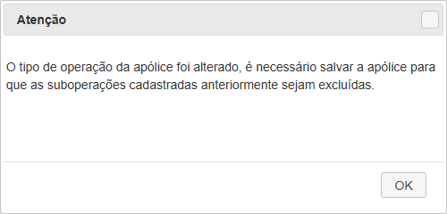
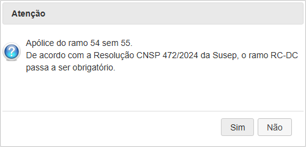
O sistema mostra, no alto da tela, uma destas mensagens:
A primeira aparece quando a apólice é nova; a segunda, quando você alterou uma que já existia. Junto delas pode vir "Não existem embarques para serem recalculados!" — é apenas informativo.
O formulário é dividido em blocos. Sete deles existem em todos os ramos; os demais aparecem só em alguns. As imagens abaixo são do RCTR-C, com a tela recém-aberta — repare que os campos estão apagados, porque a lupa ainda não foi clicada.
| Seção | Aparece em |
|---|---|
| Coberturas / Tipos de Transporte | Transporte Nacional · Importação · Exportação |
| Condições Referenciais - Adicionais e Descontos | Transporte Nacional · RCTR-C · RCTF-C · RCTR-VI |
| Verificação de Arredondamento no Fechamento | Transporte Nacional · RCTR-C · RCTF-C · RCTA-C · RCA-C |
| Verbas | RCTR-C |
| Condições Referenciais / Percurso Terrestre | RCTA-C |
| Condições Referenciais | RCA-C |
| % Desconto na Fatura (Quantidade de viagens) | RCV |
| Parâmetros para processamento do interface com STREITI | Importação |
| Danos à Carga | RCTR-VI |
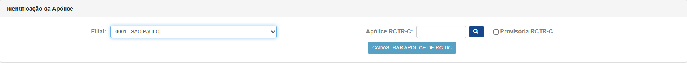
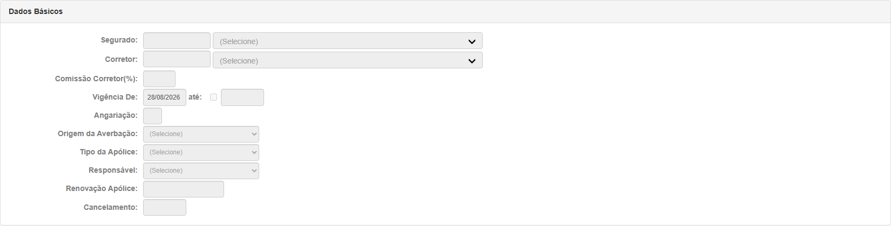
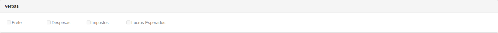
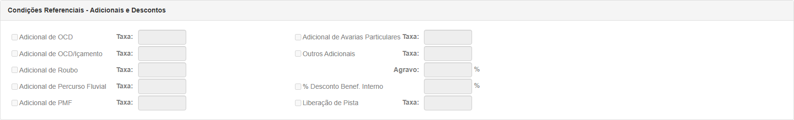
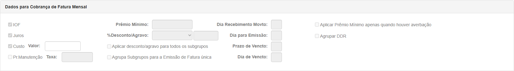
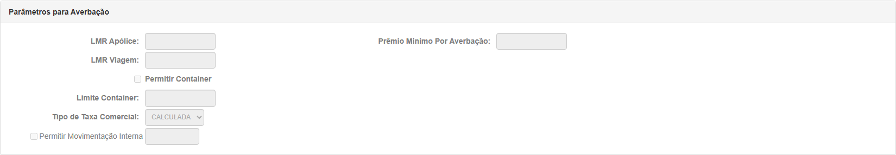
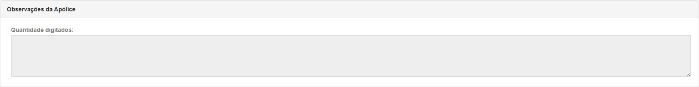
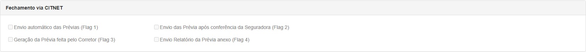
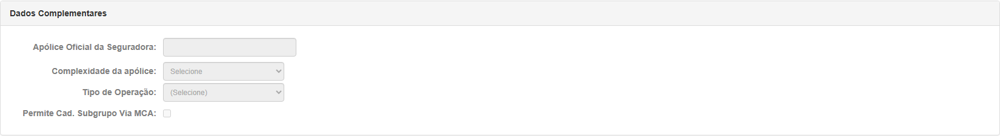
Preencher um campo do cadastro não é só guardar um dado — quase sempre muda o comportamento do sistema mais adiante, no cálculo do prêmio, na emissão da fatura ou na aceitação de uma averbação. Este capítulo percorre campo a campo e diz o que passa a valer quando ele está preenchido ou marcado.
Define de quem é a apólice. A lista só traz clientes cadastrados na filial escolhida — trocar a filial troca a lista inteira. É também o que alimenta o CNPJ Pagador: se o código do segurado não for um CNPJ válido, o salvamento é recusado com “Segurado Pagador não cadastrado.”
O percentual informado é a comissão do corretor sobre o prêmio. Fica registrado na apólice e é o valor base usado no cálculo da corretagem — que pode ser detalhada por participante no botão Corretagem.
Delimita o período em que a apólice aceita operação. A regra é data inicial ≤ data da operação ≤ data final. Fora dela, a averbação é bloqueada com mensagem do tipo “Data de Saída fora da Vigência da Apólice”. A data final só fica editável depois de marcar a caixinha ao lado de até. Quando a vigência começa ou termina no meio do mês, o Prêmio Mínimo passa a ser cobrado de forma proporcional — ver o campo Prêmio Mínimo.
Preencher a data de cancelamento tira a apólice de operação. No RCV há prazo mínimo de 24 horas para cancelar. Se existirem averbações abertas, o sistema alerta — não bloqueia. Atenção: uma apólice com d_can_apo preenchida é tratada como cancelada pelo servidor mesmo que o indicador diga o contrário.
Define a periodicidade do faturamento. As opções na tela são Diária e Mensal, entre outras.
Diz por onde as averbações desta apólice podem entrar. As opções medidas incluem AT&M e CITNET. Restringe o canal de entrada do movimento.
Usuário responsável pela apólice. Serve para rastreio e filtro em relatórios.
É o piso do faturamento. Com ele preenchido, a fatura emitida nunca sai abaixo desse valor: quando o cálculo do mês fica menor, o próprio Prêmio Mínimo vira a base da fatura.
Em período parcial o valor é rateado por dia, pela fórmula (Prêmio Mínimo ÷ dias do mês) × dias válidos. Isso vale quando o mês não foi inteiro por qualquer motivo — suspensão, início de vigência no meio do mês ou fim de vigência antes do fechamento.
Exemplo: Prêmio Mínimo de R$ 300, mês de 30 dias, apólice suspensa a partir do dia 15 → 14 dias válidos → (300 ÷ 30) × 14 = R$ 140,00.
⚠️ A contagem exclui o dia de início. Vigência começando em 09/06 num mês de 30 dias dá 21 dias, não 22.
Quando a fatura calculada fica abaixo do mínimo, a apólice é marcada com suspensão por prêmio mínimo e a emissão fica bloqueada até regularizar. E numa prévia sem movimento, o Resumo de Embarques ainda gera arquivo, avisando “Estará sendo efetuada a cobrança do Prêmio Mínimo”.
Marcado, condiciona a cobrança do prêmio mínimo à existência de averbação no período. Desmarcado, o mínimo é cobrado mesmo em mês sem movimento.
Dia do mês em que a seguradora espera receber o movimento de embarques do cliente.
Dia do mês em que a fatura é emitida.
Definem quando a fatura vence — e são mutuamente excludentes. Prazo conta dias a partir da emissão; Dia fixa uma data do mês. Preencher os dois é recusado com “Informar apenas uma das duas informações: Prazo de Vencto OU Dia de Vencto”; deixar os dois vazios, com “Informar o Prazo ou o Dia para Vencimento da Conta.”
No RCV o prazo tem teto vindo do parâmetro do produto — acima dele o sistema recusa: “O prazo de vencimento não pode ser superior ao prazo máximo cadastrado no Parâmetro do Produto (7 dias)”.
Aplica um ajuste percentual sobre a fatura mensal. A lista tem Desconto(-) e Agravo(+); a taxa ao lado é o percentual. Selecionar a opção e deixar a taxa vazia gera erro. Há ainda o botão Desconto/Agravo Fatura, que permite ajuste por período.
Marcado, o ajuste vale para todos os subgrupos da apólice; desmarcado, só para o principal.
Marcado, os subgrupos entram numa fatura só. Desmarcado, cada subgrupo fatura separado.
Marcam quais encargos compõem a cobrança. O Custo tem campo de valor ao lado.
Liga o agrupamento do DDR (Desconto por Direito de Regresso) no faturamento. O detalhe do DDR por embarcador/estipulação fica no botão PI / DDR.
Limite Máximo de Responsabilidade do contrato — o teto que a seguradora assume para a apólice como um todo. Ao salvar, o sistema pede confirmação: “Confirma a Inclusão de LMR para a Apólice?”
Mesmo conceito, aplicado a cada viagem. Averbação que ultrapasse esse valor não é aceita dentro do limite normal.
Teto específico por contêiner, quando a apólice trabalha com contêiner.
Piso de prêmio aplicado a cada averbação — diferente do Prêmio Mínimo mensal, que é piso da fatura.
Marcam quais parcelas entram na base de cálculo do valor segurado. Lucros Esperados tem teto: o percentual aceito vai até 100%. Acima disso o sistema recusa com “O percentual de Lucros não pode ser superior a 100%.” — e ao sair do campo o valor acima de 100 é capado para 100,00.
Cada adicional marcado habilita a Taxa ao lado e passa a compor o prêmio. Desmarcar um adicional que já esteja em uso por uma condição comercial é bloqueado — o sistema avisa que existe condição comercial com taxa adicional daquele tipo.
Marcado, o sistema envia as prévias automaticamente, sem ação do operador.
Marcado, a prévia só sai depois que a seguradora conferir.
Marcado, quem gera a prévia é o corretor, pelo CITNET.
Marcado, o relatório da prévia vai anexado no envio.
Marcado, quando a soma dos prêmios das averbações diverge do cálculo por I.S. total × taxa, o sistema assume o valor calculado pela taxa, absorvendo a diferença de arredondamento.
Número do contrato no sistema da seguradora. Serve para conciliação — não altera cálculo.
Define quem paga a fatura. Precisa corresponder a um segurado cadastrado; caso contrário o salvamento é recusado com “Segurado Pagador não cadastrado.” O botão RESTAURAR CNPJ PAGADOR devolve o CNPJ do segurado da apólice.
Classificação interna da apólice (opções de 1 em diante). Usada para triagem e relatórios.
Define a natureza da operação — as opções medidas incluem Seguro Próprio e Estipulação. Trocar este campo numa apólice já cadastrada tem efeito destrutivo: o sistema avisa “O tipo de operação da apólice foi alterado, é necessário salvar a apólice para que as suboperações cadastradas anteriormente sejam excluídas.”
Marcado, autoriza o cadastro de subgrupo pelo MCA.
São os dois limites de cobertura do RCV e ambos são obrigatórios. Sem eles o salvamento é recusado com “Informar o valor de Danos Materiais (DM)” e “Informar o valor de Danos Corporais (DC)”.
Faixa de desconto por volume: quanto maior a quantidade de viagens no período, maior o percentual de desconto aplicado na fatura. Seção exclusiva do RCV.
Além do formulário comum, cada ramo cobra campos próprios. Abaixo, para cada um, está o que o sistema exigiu de fato quando tentamos salvar — com a mensagem exata.
Transporte Nacional (ramo 21). Tem 98 campos na tela e 10 seções.
Mensagem exata ao tentar salvar sem esses campos:
Ações disponíveis neste ramo: Corretagem · Cosseguro · Condições Comerciais · Limites de Responsabilidade por Mercadoria · Mercadorias Cobertas e Não Cobertas · Customização de Impressão Batch · Suspensão de Apólice · Desconto/Agravo Fatura.
Seções que só existem aqui: Coberturas / Tipos de Transporte · Condições Referenciais - Adicionais e Descontos · Verificação de Arredondamento no Fechamento.
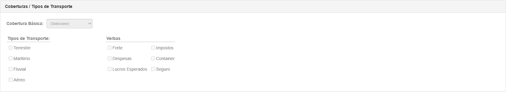
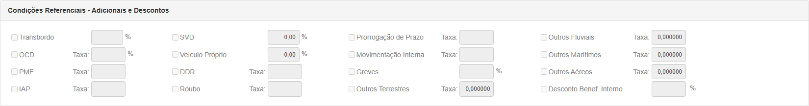
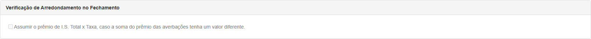
RCTR-C — Responsabilidade Civil do Transportador Rodoviário de Carga (ramo 54). Tem 87 campos na tela e 10 seções.
Ações disponíveis neste ramo: Corretagem · Cosseguro · Condições Comerciais · Limites de Responsabilidade por Mercadoria · Mercadorias Cobertas e Não Cobertas · Customização de Impressão Batch · Suspensão de Apólice · PI / DDR · Certificado · Desconto/Agravo Fatura · Cadastrar apólice de RC-DC.
Seções que só existem aqui: Verbas · Condições Referenciais - Adicionais e Descontos · Verificação de Arredondamento no Fechamento.
549999000001, filial 1, vigência 29/08/2026 a 29/08/2027. Conferida no banco de dados após salvar.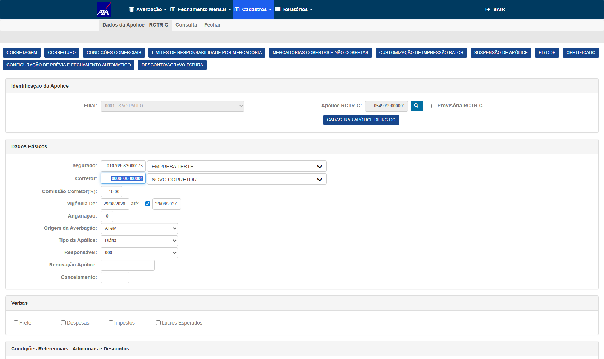
RCTF-C — Transportador Ferroviário (ramo 38). Tem 65 campos na tela e 9 seções.
Ações disponíveis neste ramo: Corretagem · Cosseguro · Condições Comerciais · Limites de Responsabilidade por Mercadoria · Mercadorias Cobertas e Não Cobertas · Customização de Impressão Batch · Suspensão de Apólice · Desconto/Agravo Fatura.
Seções que só existem aqui: Condições Referenciais - Adicionais e Descontos · Verificação de Arredondamento no Fechamento.
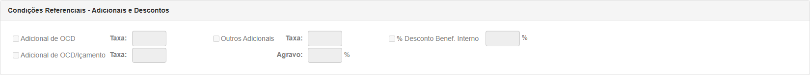
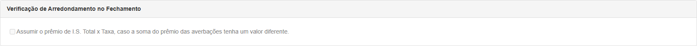
389999000001, filial 1, vigência 29/08/2026 a 29/08/2027. Conferida no banco de dados após salvar.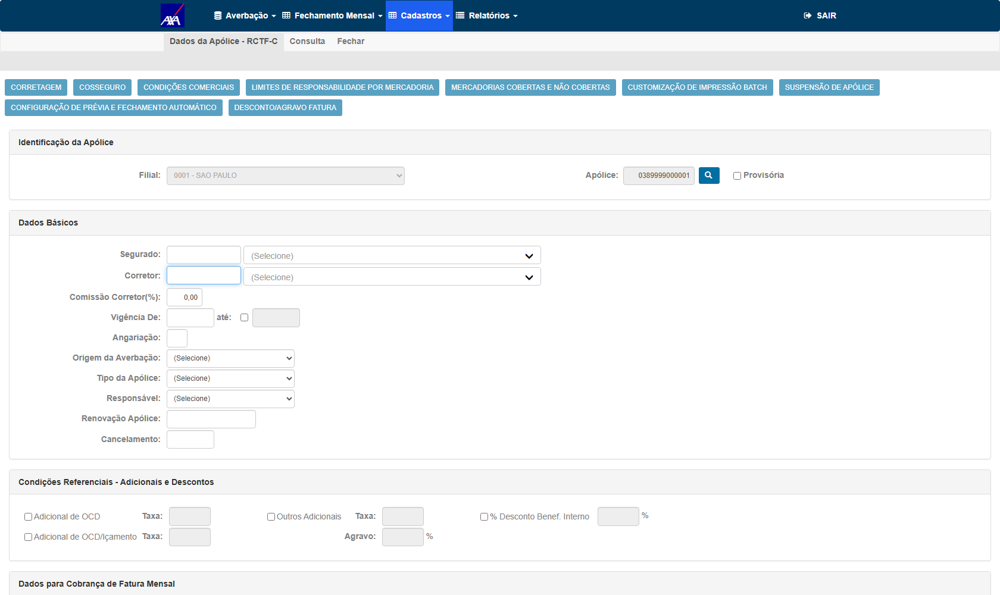
RCTA-C — Transportador Aéreo (ramo 58). Tem 60 campos na tela e 9 seções.
Ações disponíveis neste ramo: Corretagem · Cosseguro · Condições Comerciais · Limites de Responsabilidade por Mercadoria · Mercadorias Cobertas e Não Cobertas · Customização de Impressão Batch · Suspensão de Apólice · Certificado · Desconto/Agravo Fatura.
Seções que só existem aqui: Condições Referenciais / Percurso Terrestre · Verificação de Arredondamento no Fechamento.
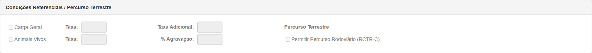
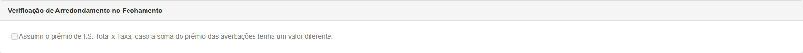
589999000001, filial 1, vigência 29/08/2026 a 29/08/2027. Conferida no banco de dados após salvar.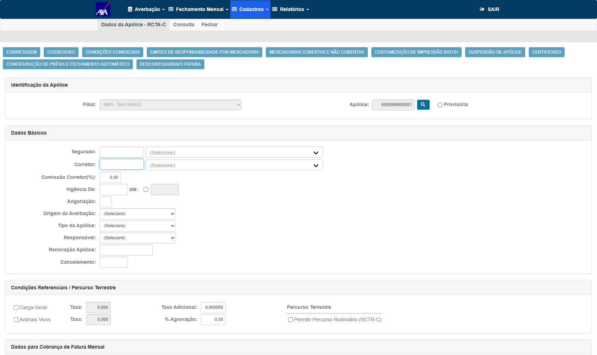
RCA-C — Transportador Aquaviário (ramo 56). Tem 54 campos na tela e 9 seções.
Mensagem exata ao tentar salvar sem esses campos:
Ações disponíveis neste ramo: Corretagem · Cosseguro · Condições Comerciais · Limites de Responsabilidade por Mercadoria · Mercadorias Cobertas e Não Cobertas · Customização de Impressão Batch · Suspensão de Apólice · Desconto/Agravo Fatura.
Seções que só existem aqui: Condições Referenciais · Verificação de Arredondamento no Fechamento.
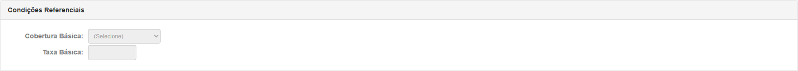
RCV — Responsabilidade Civil de Veículos (ramo 59). Tem 46 campos na tela e 8 seções.
Ações disponíveis neste ramo: Corretagem · Condições Comerciais · Suspensão de Apólice.
Seções que só existem aqui: % Desconto na Fatura (Quantidade de viagens).
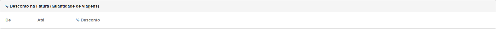
599999000001, filial 1, vigência 29/08/2026 a 29/08/2027. Conferida no banco de dados após salvar.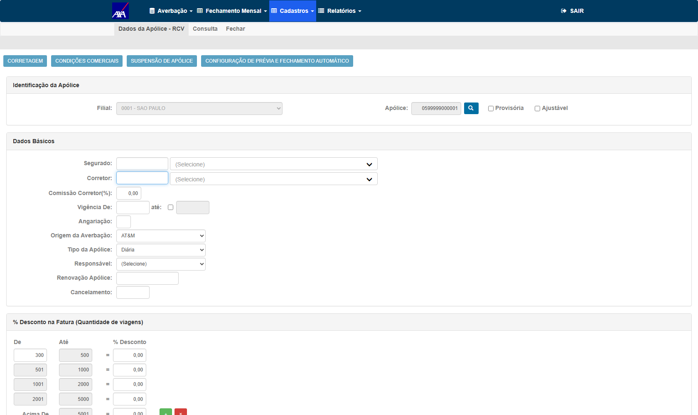
Importação (ramo 22, modalidade 25). Tem 81 campos na tela e 9 seções.
Mensagem exata ao tentar salvar sem esses campos:
Ações disponíveis neste ramo: Corretagem · Cosseguro · Condições Comerciais · Limites de Responsabilidade por Mercadoria · Mercadorias Cobertas e Não Cobertas · Suspensão de Apólice.
Seções que só existem aqui: Coberturas / Tipos de Transporte · Parâmetros para processamento do interface com STREITI.
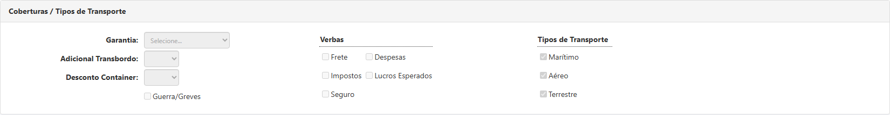
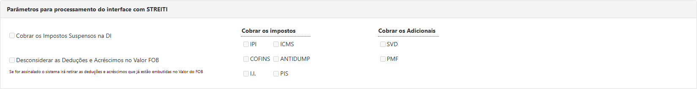
Exportação (ramo 22, modalidade 28). Tem 65 campos na tela e 8 seções.
Mensagem exata ao tentar salvar sem esses campos:
Ações disponíveis neste ramo: Corretagem · Cosseguro · Condições Comerciais · Limites de Responsabilidade por Mercadoria · Mercadorias Cobertas e Não Cobertas · Suspensão de Apólice.
Seções que só existem aqui: Coberturas / Tipos de Transporte.
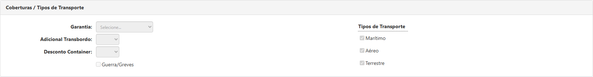
RCTR-VI — Viagem Internacional (ramo 32, modalidade 30). Tem 80 campos na tela e 9 seções.
Mensagem exata ao tentar salvar sem esses campos:
Ações disponíveis neste ramo: Corretagem · Cosseguro · Condições Comerciais · Suspensão de Apólice.
Seções que só existem aqui: Danos à Carga · Condições Referenciais - Adicionais e Descontos.
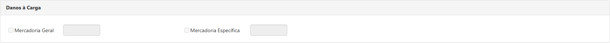
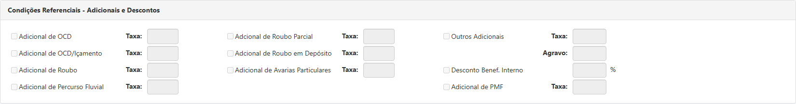
Com a apólice salva, os botões do topo da tela ficam disponíveis. Cada um abre uma janela sobre o formulário, com um cadastro próprio que só existe porque a apólice existe. São eles que completam a configuração do contrato.
| Botão | Para que serve | Em quais ramos |
|---|---|---|
| Corretagem | Cadastra os corretores que participam da apólice e o percentual de cada um. | todos os ramos |
| Cosseguro | Divide o risco da apólice com outras seguradoras. | Transporte Nacional · RCTR-C · RCTF-C · RCTA-C · RCA-C · Importação · Exportação · RCTR-VI |
| Condições Comerciais | Define as taxas e regras de cálculo do prêmio. É a aba mais usada no dia a dia. | todos os ramos |
| Limites de Responsabilidade por Mercadoria | Define um teto de cobertura por tipo de mercadoria. | Transporte Nacional · RCTR-C · RCTF-C · RCTA-C · RCA-C · Importação · Exportação |
| Mercadorias Cobertas e Não Cobertas | Lista o que a apólice aceita e o que recusa. | Transporte Nacional · RCTR-C · RCTF-C · RCTA-C · RCA-C · Importação · Exportação |
| Customização de Impressão Batch | Ajusta o layout da impressão em lote dos certificados. | Transporte Nacional · RCTR-C · RCTF-C · RCTA-C · RCA-C |
| Suspensão de Apólice | Suspende e reativa a apólice por período, o que afeta o faturamento. | todos os ramos |
| PI / DDR | Participação nos lucros e Desconto por Direito de Regresso. | RCTR-C |
| Certificado | Configura a emissão dos certificados de averbação. | RCTR-C · RCTA-C |
| Desconto/Agravo Fatura | Aplica desconto ou acréscimo percentual na fatura mensal. | Transporte Nacional · RCTR-C · RCTF-C · RCTA-C · RCA-C |
| Cadastrar apólice de RC-DC | Abre o cadastro da apólice de RC-DC exigida pela Resolução CNSP 472/2024. | RCTR-C |
Distribui a comissão entre os corretores e assessorias que participam da apólice.
Cada participante entra com seu percentual. A soma é o que remunera a intermediação sobre o prêmio faturado. É aqui que se divide a comissão quando há mais de um corretor.
Botões: Incluir na Lista · Salvar · Fechar.
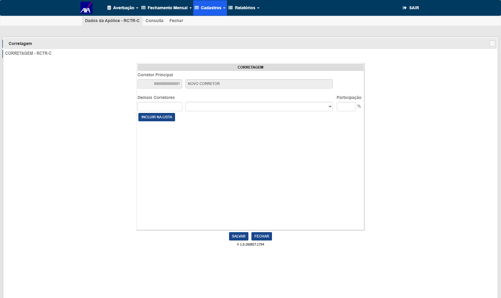
Divide o risco da apólice com outras seguradoras.
Informa as congêneres e o percentual de cada uma. Com cosseguro, a responsabilidade financeira do sinistro é repartida na proporção cadastrada. Não existe no RCV.
Botões: Incluir na Lista · Salvar · Fechar.
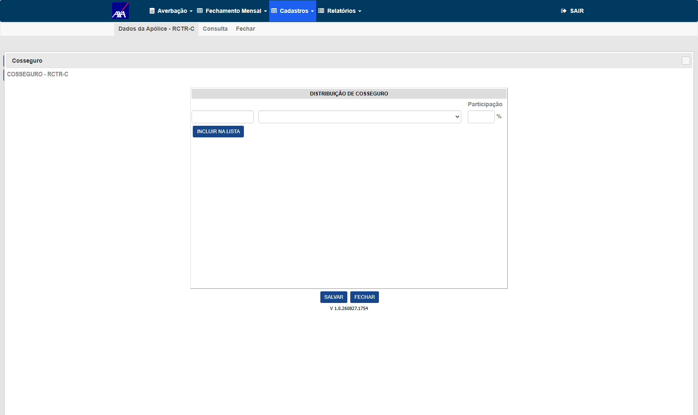
Define as taxas e as regras de cálculo do prêmio. É a tela mais usada no dia a dia.
É onde ficam a taxa aplicada à averbação e as condições por subgrupo. Tem campos de Subgrupo, Taxa Embarcador (SIM/NÃO) e CNPJ Raiz (SIM/NÃO) — marcar Taxa Embarcador como SIM habilita os campos de CNPJ.
⚠️ No RCV (ramo 59), e só nele, a alteração da condição comercial é bloqueada enquanto houver averbações em movimento aberto. Averbações já encerradas não bloqueiam. As datas da condição também são validadas contra a vigência da apólice: a data inicial não pode ser anterior ao início da apólice, nem a final posterior ao fim da vigência.
Campos da tela: Subgrupo · SIM · NÃO · Taxa Embarcador · Tipo de Taxa · Tipo de Transporte · Tipo de Embarque · Data de Vigência Prevista · IS Inicial/IS Final · Origem.
Botões: SALVAR · REPLICAR · NOVO · FECHAR · EXPORTAR.
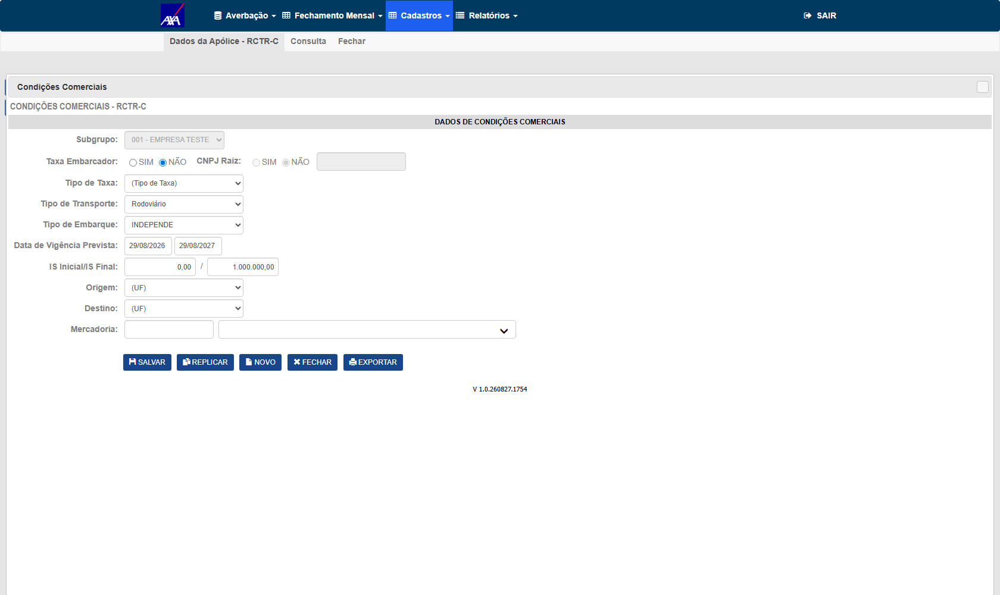
Define um teto de cobertura por tipo de mercadoria.
Permite que uma mercadoria específica tenha limite diferente do LMR geral da apólice. Cadastra-se por Subgrupo + Mercadoria + Limite Responsabilidade.
Campos da tela: Subgrupo · Mercadoria · Limite Responsabilidade · Data de Vigência.
Botões: SALVAR · NOVO · FECHAR.
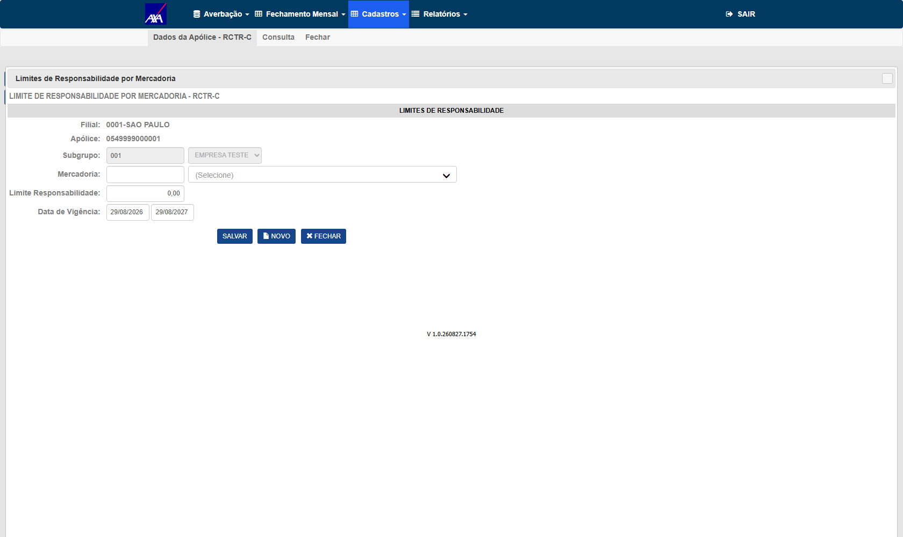
Lista o que a apólice aceita e o que recusa.
Tem as duas listas lado a lado — Mercadorias Cobertas e Mercadorias Excluídas. Uma mercadoria na lista de excluídas faz a averbação ser recusada.
Campos da tela: Subgrupo · Mercadorias Cobertas · Mercadorias Excluídas · Mercadoria.
Botões: ADICIONAR · SALVAR · FECHAR.
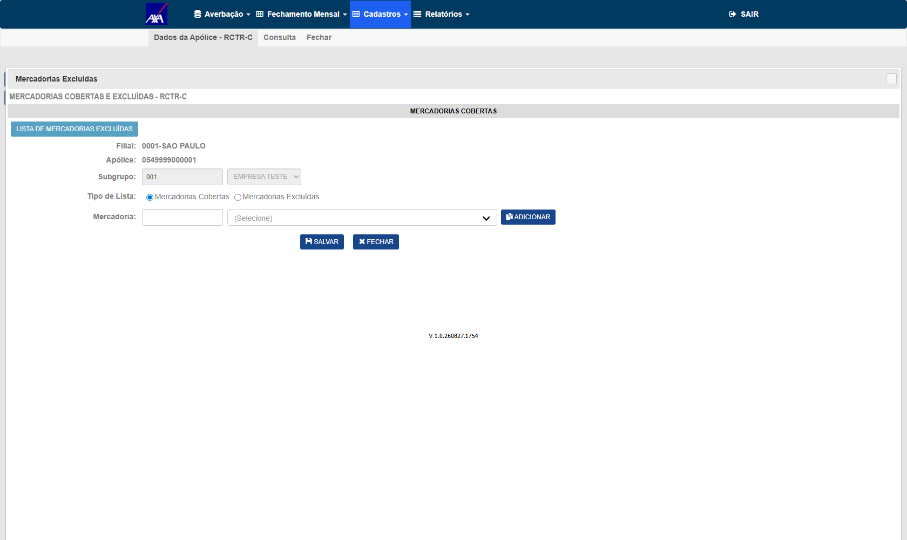
Ajusta o layout da impressão em lote dos certificados.
Configura como sai a impressão em massa dos documentos da apólice.
Campos da tela: Apólice.
Botões: SALVAR · FECHAR.
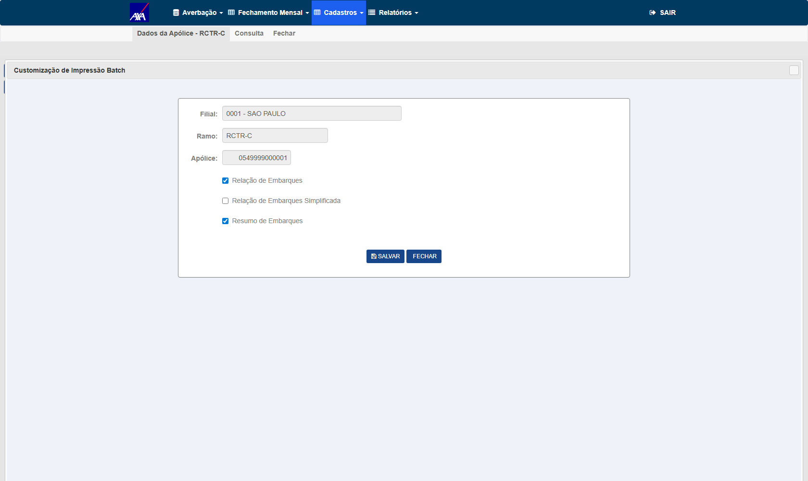
Suspende e reativa a apólice por período — e isso muda o faturamento.
Informa-se o Período de Suspensão de / até.
Suspensão do mês inteiro (a partir do dia 1º): a fatura não é emitida.
Suspensão parcial (por exemplo, a partir do dia 15): a fatura é emitida, mas só com os embarques ocorridos fora do período suspenso — os que caírem dentro da suspensão não entram.
Quando há Prêmio Mínimo, ele é cobrado proporcionalmente aos dias válidos. A suspensão do ramo 54 e do 55 é sincronizada, e o sistema não aceita períodos sobrepostos.
Campos da tela: Período de Suspensão de.
Botões: Incluir · Salvar · Fechar.
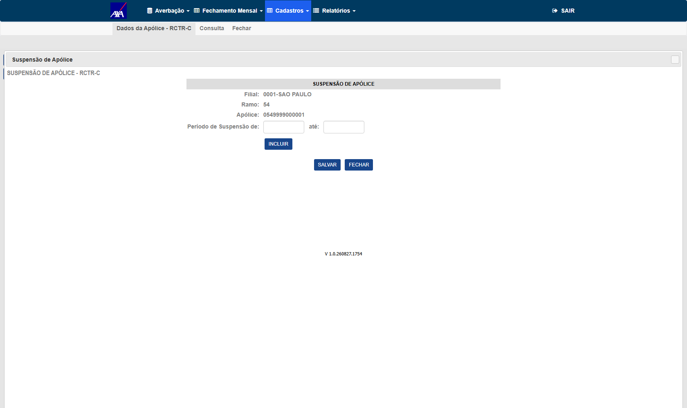
Participação nos lucros e Desconto por Direito de Regresso.
Cadastra por Vigência e Tipo de Operação, com opção de CNPJ por Raiz ou Total. É a contrapartida financeira negociada com o cliente. Neste ambiente o botão aparece apenas no RCTR-C.
Campos da tela: Vigência · Tipo de Operação · Raiz · Total · CNPJ.
Botões: Adicionar · Salvar · Fechar.
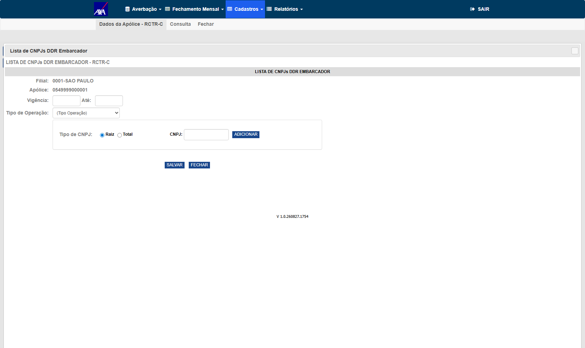
Configura a emissão dos certificados de averbação.
Trabalha por Apólice, Vigência de / até e Quantidade, controlando a faixa de numeração disponível para emissão.
Campos da tela: Apólice · Vigência de · ate · Quantidade.
Botões: GERAR · FECHAR.
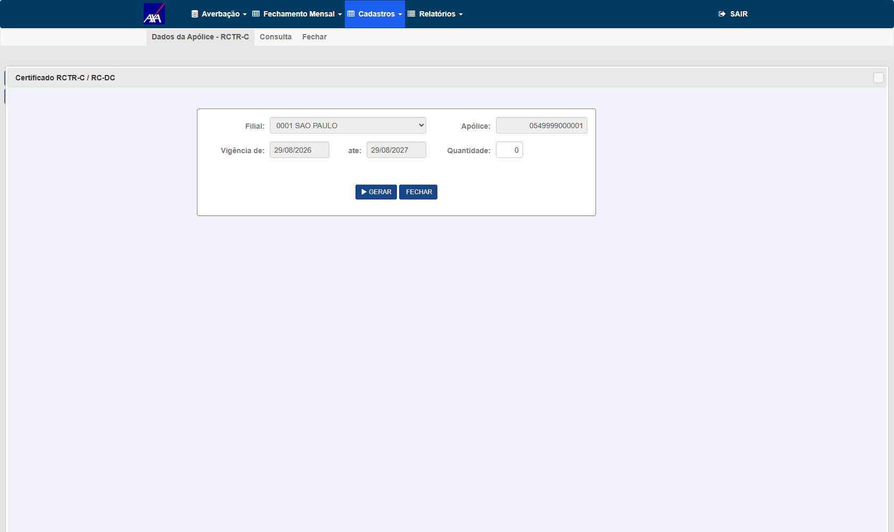
Define o calendário automático da prévia e do fechamento mensal.
Campos de Dias para Geração e Dias para Emissão — é o que faz a prévia e o fechamento acontecerem sozinhos no ciclo mensal.
Campos da tela: Dias para Geração · Dias para Emissão · Prévia Disponibilizada.
Botões: Salvar · Fechar.
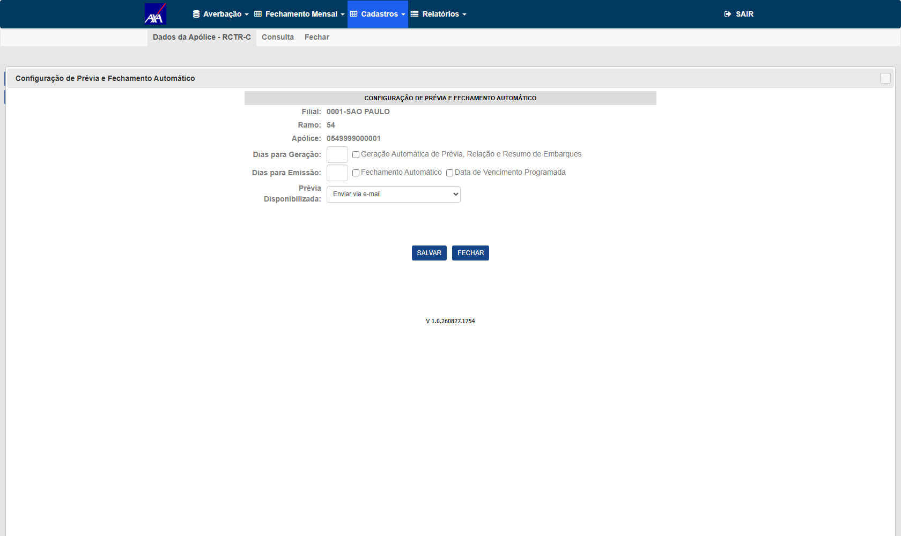
Aplica desconto ou acréscimo na fatura, com período próprio.
Diferente do percentual fixo dos Dados de Cobrança, aqui o ajuste tem Vigência de / até e Valor do Desconto/Agravo — serve para concessão temporária, sem mexer na configuração permanente da apólice.
Campos da tela: Ramo · Apólice · Vigência de · ate · Valor do Desconto/Agravo Fatura.
Botões: INCLUIR NA LISTA · NOVO · SALVAR LISTA · EXCLUIR TODOS · FECHAR.
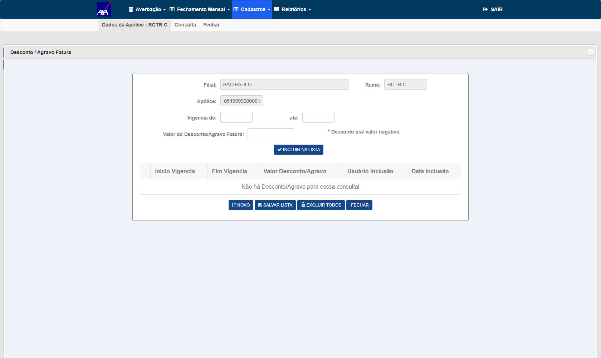
| Mensagem exata | O que fazer |
|---|---|
Inclusão dos dados efetuada com sucesso | Nada. A apólice foi criada. |
Atualização dos dados efetuada com sucesso | Nada. As alterações foram gravadas. |
Não existem embarques para serem recalculados! | Nada. É informativo e aparece junto do sucesso. |
Informar o Prazo ou o Dia para Vencimento da Conta. | Em Dados para Cobrança, preencha Prazo de Vencto ou Dia de Vencto. |
Informar apenas uma das duas informações: Prazo de Vencto OU Dia de Vencto | Você preencheu os dois. Apague um deles. |
Segurado Pagador não cadastrado. | O CNPJ pagador não corresponde a um segurado cadastrado. Use o botão RESTAURAR CNPJ PAGADOR ou escolha um segurado com CNPJ válido. |
Selecionar a Cobertura Básica. | Escolha a Cobertura Básica na lista. |
Selecionar pelo menos um Tipo de Transporte. | Marque ao menos um: Terrestre, Marítimo, Fluvial ou Aéreo. |
Selecionar Carga Geral e/ou Animais Vivos. | No RCTA-C, marque Carga Geral e/ou Animais Vivos e informe a Taxa. |
Informar o valor de Danos Materiais (DM) | No RCV, preencha o valor de DM. |
Informar o valor de Danos Corporais (DC) | No RCV, preencha o valor de DC. |
O prazo de vencimento não pode ser superior ao prazo máximo cadastrado no Parâmetro do Produto (7 dias) | No RCV, use Prazo de Vencto de até 7 dias. |
Selecionar o Subscritor da Apólice. | Nos ramos internacionais, escolha o Subscritor. |
Selecionar o Emissor da Apólice. | Nos ramos internacionais, escolha o Emissor. |
Selecionar a Garantia da Apólice. | Escolha a Garantia na Importação/Exportação. |
Selecionar Tipo de Provisória. | Na Importação, escolha o Tipo de Provisória. |
Definir a forma de pagamento. | Informe a forma de pagamento da apólice. |
Digite 3 ou mais caracteres | Na busca de Segurado/Corretor, digite ao menos 3 letras. |
Nenhum resultado encontrado | O nome não existe nessa filial. Confira a filial escolhida ou cadastre o cliente antes. |
| Situação | O que está acontecendo |
|---|---|
| Cliquei em Apólice no menu e ele fechou | Esse item abre com o mouse por cima, não com clique. Passe o mouse e clique direto no nome do ramo. |
| Os campos estão todos apagados | Falta clicar na lupa. Escolher a Filial não libera nada. |
| Cliquei em NOVO e perdi o que digitei | NOVO só limpa a tela. Ele não cria nem salva. |
| Os botões do topo continuam cinzas | A apólice ainda não foi salva. Salve primeiro. |
| A data final da vigência não aceita digitação | Marque a caixinha ao lado de até. |
| O segurado não aparece na busca | Digite ao menos 3 letras; confirme que ele está cadastrado nessa filial. |
| Salvei e não vi mensagem | Role a tela até o alto: as mensagens aparecem em uma faixa amarela acima do formulário. |
| Termo | Significado |
|---|---|
| Averbação | O registro de um embarque dentro da apólice. É o que gera prêmio. |
| Prêmio | O valor que o cliente paga pelo seguro. |
| LMR | Limite Máximo de Responsabilidade — o teto que a seguradora paga. LMR Apólice vale para o contrato; LMR Viagem, para cada viagem. |
| Vigência | O período em que a apólice vale. Fora dele não se averba. |
| Angariação | Percentual de comissão pela captação do cliente. |
| Subgrupo | Divisão da apólice para atender outro segurado, com condições próprias. |
| Cosseguro | Divisão do risco entre seguradoras. |
| DM / DC | Danos Materiais e Danos Corporais — os dois limites do RCV. |
| Prévia | A fatura antes do fechamento, ainda passível de ajuste. |
| RC-DC | Ramo 55, exigido junto ao RCTR-C pela Resolução CNSP 472/2024. |
Manual construído a partir de execução real no ambiente de homologação em 28–29/08/2026. Ramos nacionais medidos no CITWEB AXA; ramos internacionais no CITWEB NSTECH. As apólices de exemplo foram cadastradas e conferidas no banco de dados.